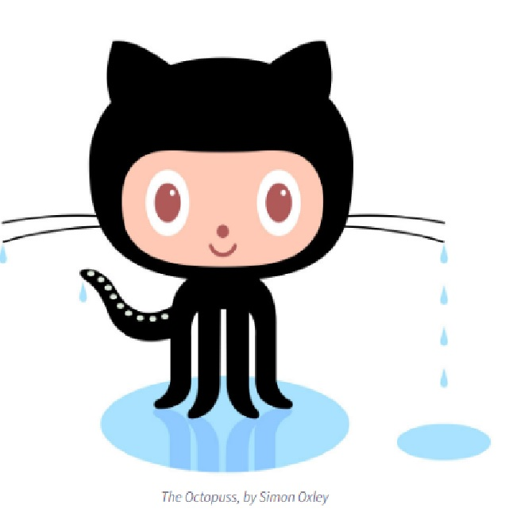

All About GitHub
- Q. What is a version control system?
- A. A version control system is a software tool that helps manages changes to source code.
- Q. What is Git?
- A. Git is a distributed version control system that tracks changes in any set of files.
- Q. What is GitHub?
- A. GitHub is an Internet hosting service for software development and version control using Git
- Q. What is the difference between Git and GitHub?
- A. Git is a local software tool and GitHub is a service that is cloud-based.
- Q. Who started GitHub and how was it started?
- A. GitHub was started by Tom Preston-Werner, Chris Wanstrath, P.J. Hyett, and Scott Chacon.
GitHub was created because Preston-Werner and Wanstrath needed this service for their own work, like collaborating on programming projects.
- Q. What company owns it now?
- A. Microsoft.
- Q. How much does a GitHub account cost?
- A. GitHub accounts are free, but there are upgrades available.
- Q. What is the Octocat?
- A. The Octocat is GitHub's mascot.
